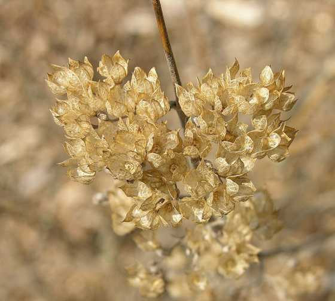
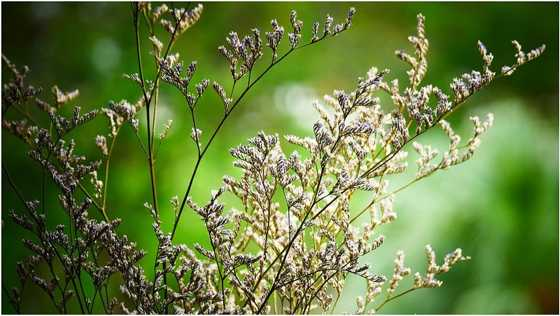
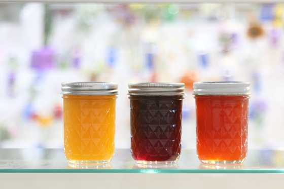
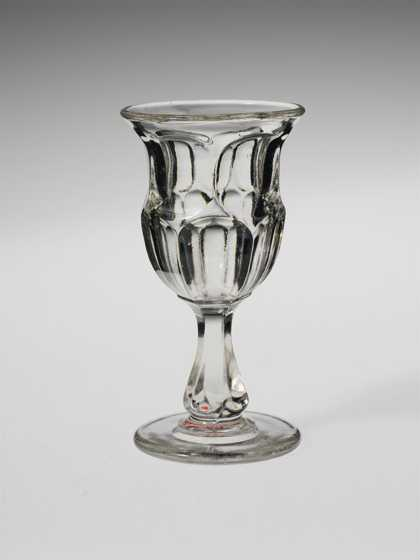
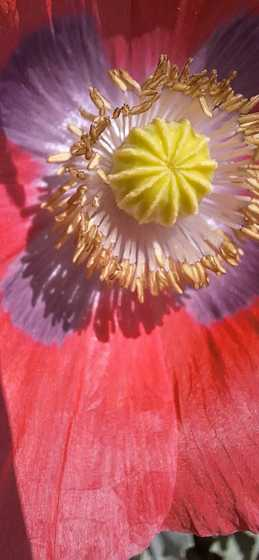
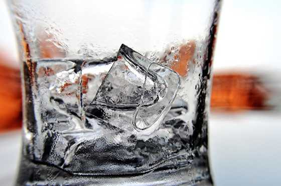
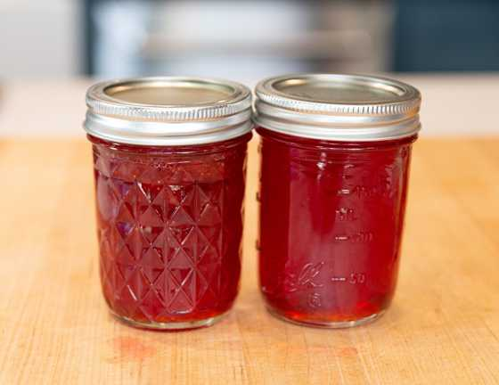
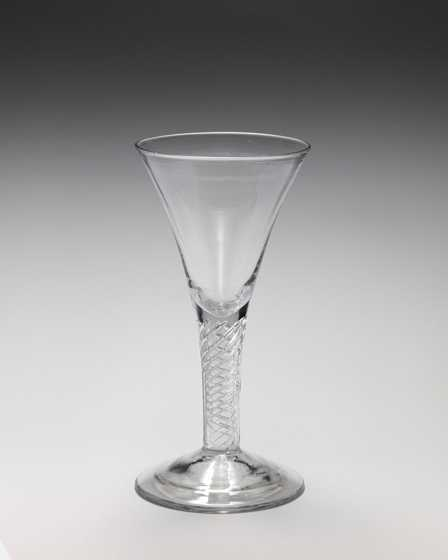
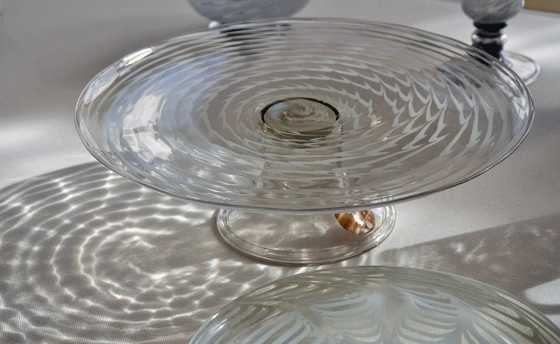

スイーツ
甘いものでひと息つく時間。
品目・価格 準備中
CAFE & BISTRO ・ 足利市通
ドライフラワーに包まれた異空間で、ブリトーとスイーツとお酒を。ひとりでも、誰かとでも。
栃木県足利市通2丁目12-15 THビル
ABOUT
Instagramの紹介文によると、Tumujiは足利市にあるカフェ&ビストロです。ドライフラワーを飾った「異空間」のような店内で、ブリトーとスイーツ、お酒を楽しめると紹介されています。
お一人でも、誰かとでも気軽に過ごせる雰囲気で、手話での対応もできるとのことです。
上記はお店のInstagramの紹介文で確認できた内容です。店名の意味や開店の経緯は公開情報からは確認できなかったため、断定していません。


MENU
お店のInstagramには、ブリトーとスイーツ、お酒、ジェリードリンク(ハイライト名「jellydrink」)の紹介があります。品目・価格の詳細は確認できていないため、以下は内容の分類のみです。
甘いものでひと息つく時間。
品目・価格 準備中
つるんとした食感を楽しむ飲み物。
品目・価格 準備中
夜のビストロの一杯に。
品目・価格 準備中ブリトーも提供されています(品目・価格は準備中)。営業時間・定休日も準備中です。



VOICE
イメージ例ドライフラワーがたくさん飾られていて、入った瞬間に日常から少し離れた気分になりました。
ご来店のお客様(創作例)
イメージ例一人でふらっと寄っても居心地がよく、スイーツと飲み物でゆっくりできました。
ご来店のお客様(創作例)
イメージ例友人と夜に訪ねて、お酒を片手におしゃべり。長居してしまいました。
ご来店のお客様(創作例)
この口コミは制作側が創作したイメージ例で、実在のお客様の声ではありません。




ACCESS
掲載している写真はフリー素材のイメージで、店舗の実際の様子ではありません。日本国内外の他地域で撮影されたものや、撮影地が不明なものを含みます。